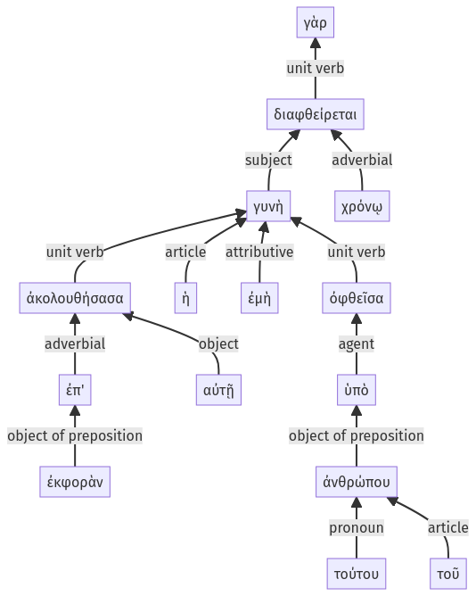

Lysias, Oration 1, 1.8.1-1.8.15a
1.7.17-1.7.29a | 1.8.16-1.8.29a
Sentence 15
1.8.1-1.8.15a
ἐπ' ἐκφορὰν γὰρ αὐτῇ ἀκολουθήσασα ἡ ἐμὴ γυνὴ ὑπὸ τούτου τοῦ ἀνθρώπου ὀφθεῖσα, χρόνῳ διαφθείρεται:
2 ἐπ' ἐκφορὰν αὐτῇ ἀκολουθήσασα
1 ἡ ἐμὴ γυνὴ
2 ὑπὸ τούτου τοῦ ἀνθρώπου ὀφθεῖσα
1 χρόνῳ διαφθείρεται
ἐπ' ἐκφορὰν γὰρ αὐτῇ ἀκολουθήσασα ἡ ἐμὴ γυνὴ ὑπὸ τούτου τοῦ ἀνθρώπου ὀφθεῖσα, χρόνῳ διαφθείρεται:
Highlighting:
- connecting words
- unit verb
- subject
- object
Color code:
- independent clause (level 1, transitive verb)
- circumstantial participle (level 2, transitive verb)
- circumstantial participle (level 2, transitive verb)
